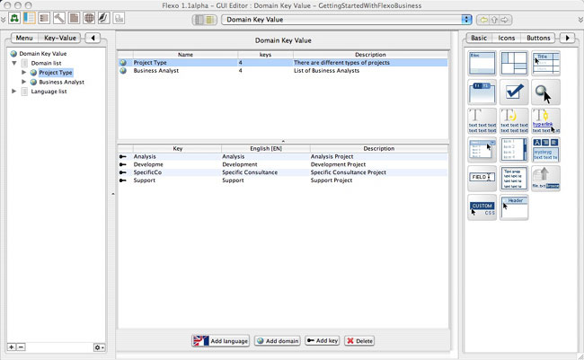

Domain-Key-Value (DKV) definition for specifying, for example, the
list of values for drop/doxn boxes, the localization of such values etc.
DKV
is composed of:
-
A list of domains that are themselves composed of
-
A list if Keys
-
A list Values associated with Keys
-
A list of languages that defines the number of Values
associated with a Keys.
